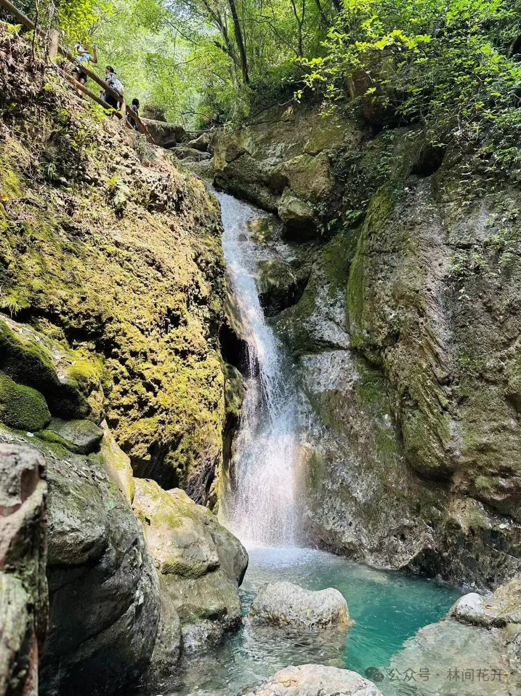

诗歌是什么？
不同的人，对诗歌有不同的诠释。对诗歌，我只可言会，不可言传，一种难以言传的体验，用最少的语言表达最复杂的情感，承载着我的喜怒哀乐，有诗意的时候，能体会流动的情绪。
来看看诗人们是怎么看诗歌的？
获得诺贝尔文学奖的波兰诗人维斯瓦娃·辛波斯卡曾以她一惯的谦逊回答：“不懂不懂”，但她却将诗当成了她的“救命稻草”，紧紧抓住，不曾放手。
在她眼中，万物皆可成诗：甲虫、石头、动植物、沙粒、天空，这些自然景物是诗；安眠药、履历表、衣服、电影、画作、剧场，这些平凡的生活元素也是诗；甚至梦境、仇恨、定时炸弹、恐怖分子等极端的情感和现实，都可以成为诗的素材。
在她的诗《写作的喜悦》中，她写道：“写作的喜悦，保存的力量，人类之手的复仇。”
对诗人余秀华来说，诗歌是她的拐杖：
面对诗歌是什么呢，我不知道，也说不出来，不过是情绪在跳跃，或沉潜。不过是当心灵发出呼唤的时候，它以赤子的姿势到来，不过是一个人摇摇晃晃地摇摇晃晃的人间走动的时候，它充当了一根拐杖。
庞德称诗歌为“猛烈的不加约束的表达”。
诗，是我们从观看到凝视的过程，是有限的生命对无限的拥抱。
诗，是人类用来对抗有限人生和缺憾现实的一大利器。
诗，是诗人摇撼世界时伸出的那条“新生手臂”。
诗，是诗人在梦想与现实之间，试图支撑起浮生的一根竿子。
我从小学习唐诗宋词，但真正与诗结缘，主动走进诗，读诗，写诗，是三年前接触到日本俳句大师小林一茶，短小、自由、灵动、意味深远的诗句，让我一下就爱上了俳句，有段时间，捧着他的诗句反复读，模仿着写诗。
露珠的世界，然而在露珠里——争吵
这是一种时空变形，人生如朝露，短暂而易碎，一茶将“争吵”置于露珠的世界中，读来既有张力，又意趣盎然。
有个朋友喜欢松尾芭蕉的诗，床头常年放着他的作品，睡前醒来都读一读。一年下来，她写了几百首短诗。受她启发，我也开始写短诗，少则几个字，多则几行，这种短小，自由，表达门槛极低的短诗，很适合我。从那以后，我尝试写现代诗和童诗，越来越体会到诗歌的独特魅力。
看到缓缓流动的河水，写下：
悠悠的河水
是我的枕头
在风抚摸下入睡
到了秋天，写下：
街道边
一把锈迹斑斑的耙子
放在
一堆落叶上
飞驰而过的电动车
把落叶吹得
仓皇而逃
停留在那张长椅下
诉说着一个古老的故事
秋天的气息
在徘徊——
走进诗，诗就成了我的新生手臂。在登山时，看到山谷，清泉击石，有了诗意：
好想把这里的阳光、清泉
林间跳跃的松鼠
还有蜘蛛网——浑然天成的艺术品
统统打包回家。
在连绵的雨天，我会想念跟小孩在植物园寻找春天的游戏，想念树叶、花朵、泥土，有了这首小诗：
我想要一个篮子
装下绿芽、树木
摘一朵路边的小野花
放进来
阳光、蓝天、白云也带上
我想要有个篮子
可以的话把春风也装进来
放一双舞鞋
跟着它的节奏跳踢踏舞
不要说我太贪心
我还想带春天回家
每天听它碎碎念
小孩是天生的诗人，和她们在一起，总能听到她们脱口而出的诗句。看着手里半片山楂片，再看月亮，自然说出「月亮在模仿我」；与单车后面的小朋友聊天，来回叫嚷着，听不清，她来了句「好想给他的耳朵装个天线，加强信号」；看到西边太阳洒满客厅，说了句「太阳不请而入，整个黄金屋」。
写了几十首短诗后，我对诗歌越来越有感觉，它是一种朦胧的美，是洒在窗台的月光，是缓缓流淌的清泉，是拂面而来的轻风，也是树叶轻吻泥土的声音。平常不过的日常，让我感觉到如此的真实，真切，如果没有诗歌，我不会去留意它，也不会去触摸它，更不会有内心的激荡。